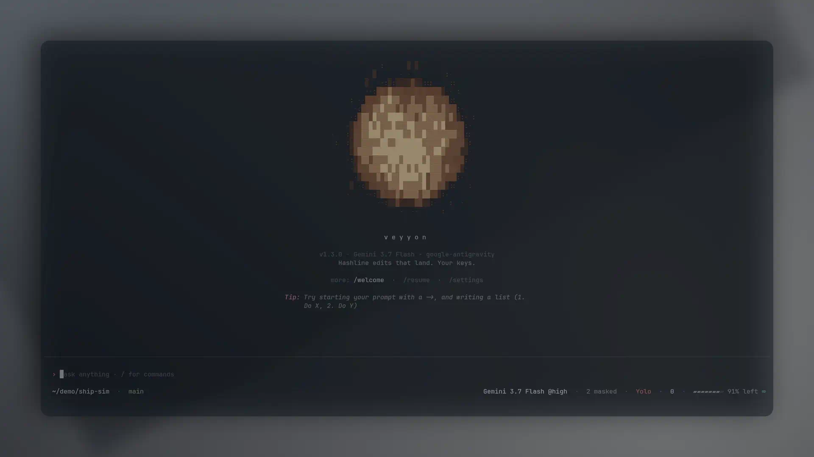

Stack and loop
Architecture and core loop.
AgentSession tool loop
Model stream → tools (read, bash, edit, …) → results → next turn. Plan/goal/vibe modes change tools and prompts in the engine. /review and advisor are separate surfaces.
Bun/TypeScript + Rust natives
CLI, TUI, providers, and session loop are TypeScript on Bun. Grep, PTY/shell, hashline apply, and related hot paths use @veyyon/natives.
MCP, skills, hooks
User/project MCP JSON, filesystem skills, TypeScript hooks, plugins. Non-interactive: veyyon --print.
Providers and config
Catalog providers (Anthropic, OpenAI, Google, Groq, OpenRouter, …) and local discovery (Ollama, LM Studio, llama.cpp). Credentials stay on the host for BYOK paths.
- Interactive: /model, --model; stored as modelRoles.default.
- Roles: smol, slow, plan, task, advisor, … via modelRoles.
- Overrides: subagent.model, compaction.model.
- Cycle: cycleOrder (default smol, slow).
Install and run
Install
curl -fsSL https://get.veyyon.dev | sh on Linux or macOS, irm https://veyyon.dev/install.ps1 | iex on Windows. Binary: veyyon / vey.
Auth
/login <provider> or set the provider API key env var. Local Ollama/LM Studio/llama.cpp discovery when the daemon is running.
Run
veyyon in a repo; /model selects the interactive model. Config default: ~/.veyyon/profiles/default/agent/.
Install, auth, run
One-line installer, then a provider key or a local daemon. Then vey in a repository.